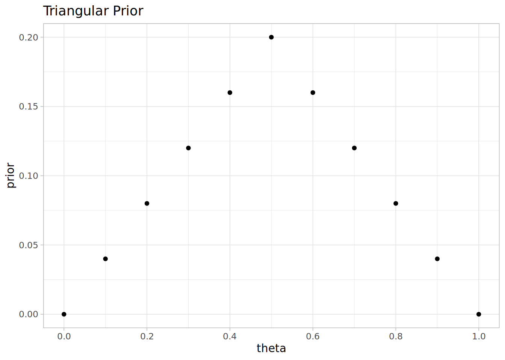
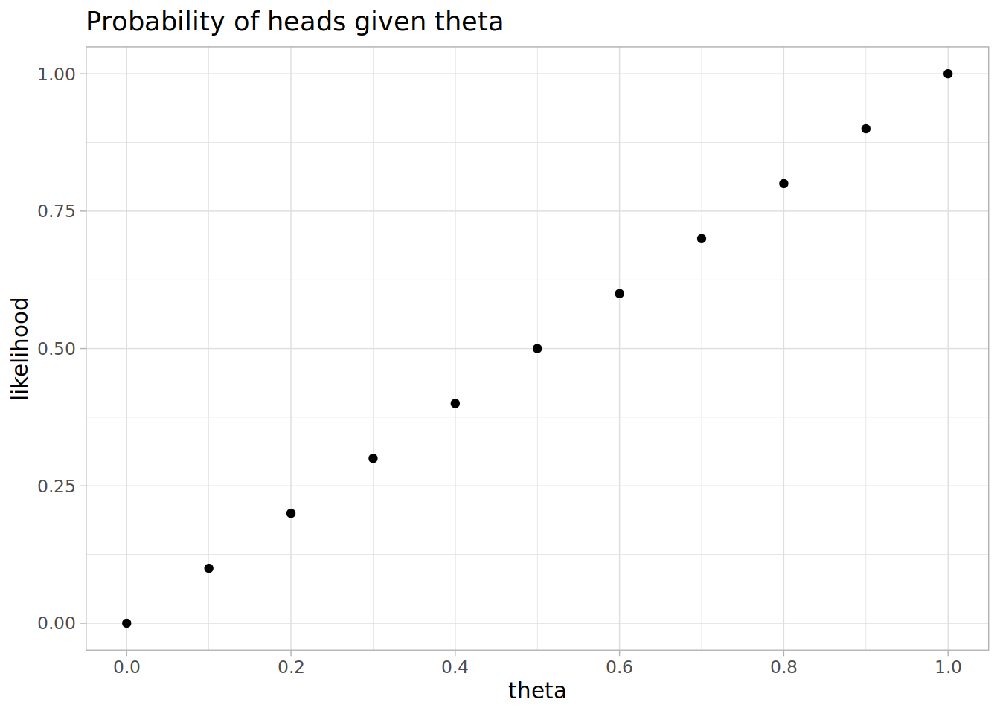
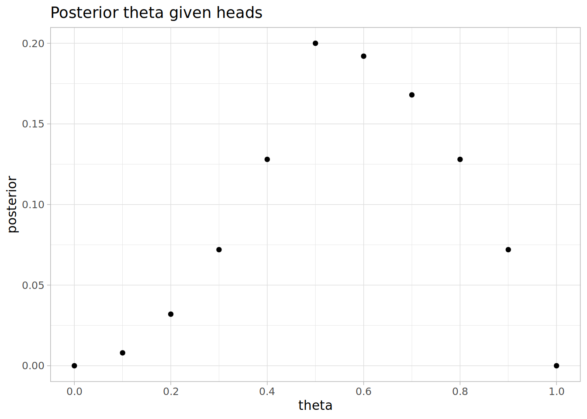
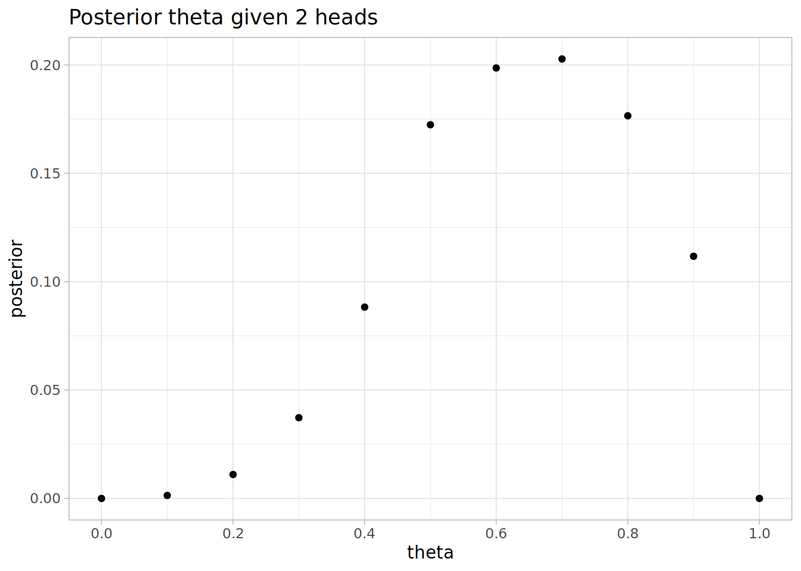
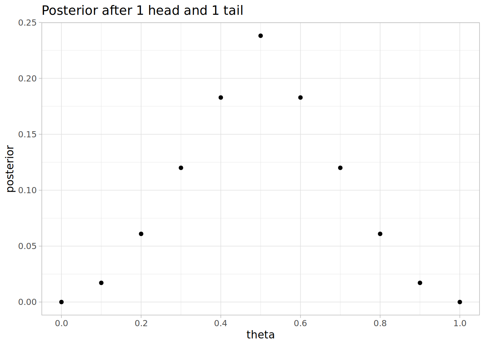
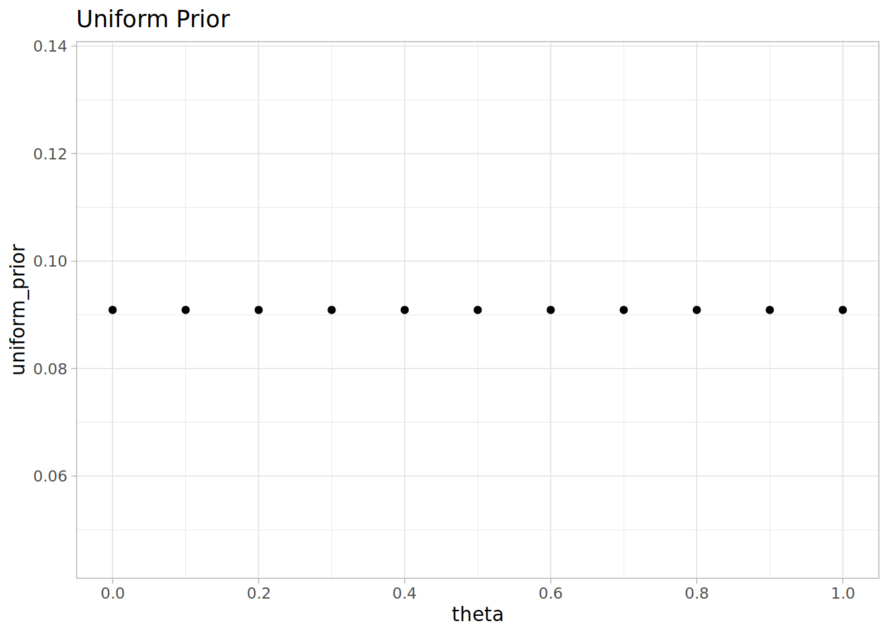
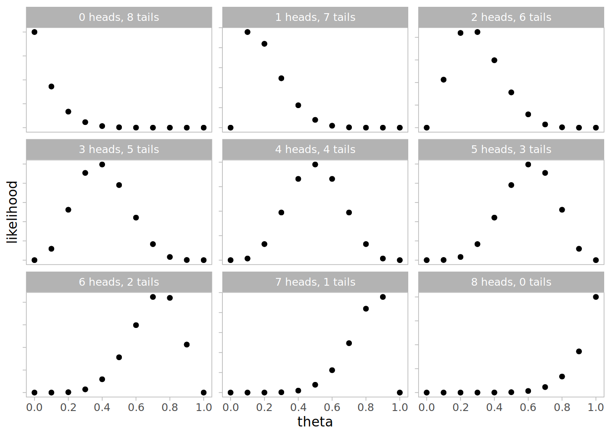
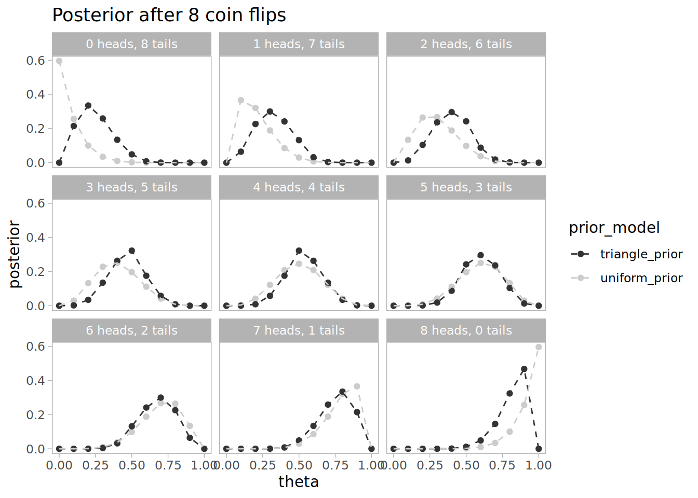

# Simple model; parameter can only be a multiple of 0.1
theta <- seq(0, 1, by=0.1)
# Prior is a triangle function
prior <- c(0, 0.04, 0.08, 0.12, 0.16, 0.2, 0.16, 0.12, 0.08, 0.04, 0)Estimating Bias in a Coin with Bayes Rule
I wanted to work through an example of applying Bayes rule to update model paremeters based on toy data This example comes from Kruschke’s Doing Bayesian Data Analysis, Section 5.3.
The model is that we have a coin and we’re trying to estimate the bias in the coin, that is the probability that it will come up heads when flipped. For simplicity we assume the bias, theta is a multiple of 0.1. We take a triangular prior centred at 0.5.

Impact of seeing a head
Let’s consider how the model distribution changes by Bayes’ rule in the case we flip the coin once and see a head.
The likelihood of getting a head given theta, is just theta (because it’s the head bias by definition)
likelihood <- theta
Then Bayes’ rule says the posterior is proportional to the prior and the likelihood. We can ignore the constant of proportionality by normalising it to 1.
# Posterior given the head
posterior <- prior * likelihood
posterior <- posterior / sum(posterior)
The posterior has moved markedly to the right, it’s more likely the coin is head biased now. The expected of bias has changed from 0.5 with the prior distribution, to 0.58 after incorporating the data of having seen one heads. The most likely value for theta is still 0.5.
Second flip of the coin
After our first flip our new prior is the posterior given the first flip was heads.
prior <- posteriorSuppose we flipped another heads, then we can apply Bayes’ rule again to get the posterior given two heads.
posterior <- prior * likelihood
posterior <- posterior / sum(posterior)
The most likely value of theta is now 0.7, and the expectation value is 0.637931.
What if we had head then tails?
Suppose the second flip gave tails instead of heads. Then our likelihood of tails is the likelihood of not flipping heads, 1 - theta. Then we can get the posterior by applying Bayes’ rule as before
likelihood <- 1 - theta
posterior <- prior * likelihood
posterior <- posterior / sum(posterior)
Expectation value is 0.5, as you would expect by symmetry. Notice that the distribution is less spread around 0.5 than our original prior.
After 8 coin flips
What would our posterior look like after 8 coin flips? Let’s look at each possible result of 8 coin flips, from 0 heads and 8 tails to 8 heads and 0 tails.
num_flips <- 8
heads <- seq(0, num_flips)
tails <- num_flips - headsIt would also be useful to contrast how the posterior is to if we had assumed a uniform prior.
uniform_prior <- rep(1/11, 11)
Let’s combine all the scenarios in a dataframe, calculating the posterior after the 8 flips.
df <-
tibble(heads=rep(heads, each=length(theta)),
tails=rep(tails, each=length(theta)),
theta=rep(theta, num_flips+1),
uniform_prior = rep(uniform_prior, num_flips+1),
triangle_prior=rep(prior, num_flips + 1)) %>%
mutate(label = paste0(heads, " heads, ", tails, " tails"),
likelihood = (theta ^ heads) * ((1-theta) ^ tails)) %>%
gather("prior_model", "prior", ends_with('_prior')) %>%
group_by(heads, prior_model) %>%
mutate(posterior = prior * likelihood / sum(prior * likelihood)) %>%
ungroup()The likelihood is theta^heads * (1-theta)^tails. Notice how the most likely value for theta depends on the outcomes.

After 8 flips the posterior distribution for theta changes much more depending on the outcome. Notice that the uniform prior moves more quickly with more data, and the triangular prior is more confident when the outcomes are close to equal.

This is just a simple example but I found running through the calculations helps me understand the idea of estimating parameter distributions rather than just estimating the most likely parameter.